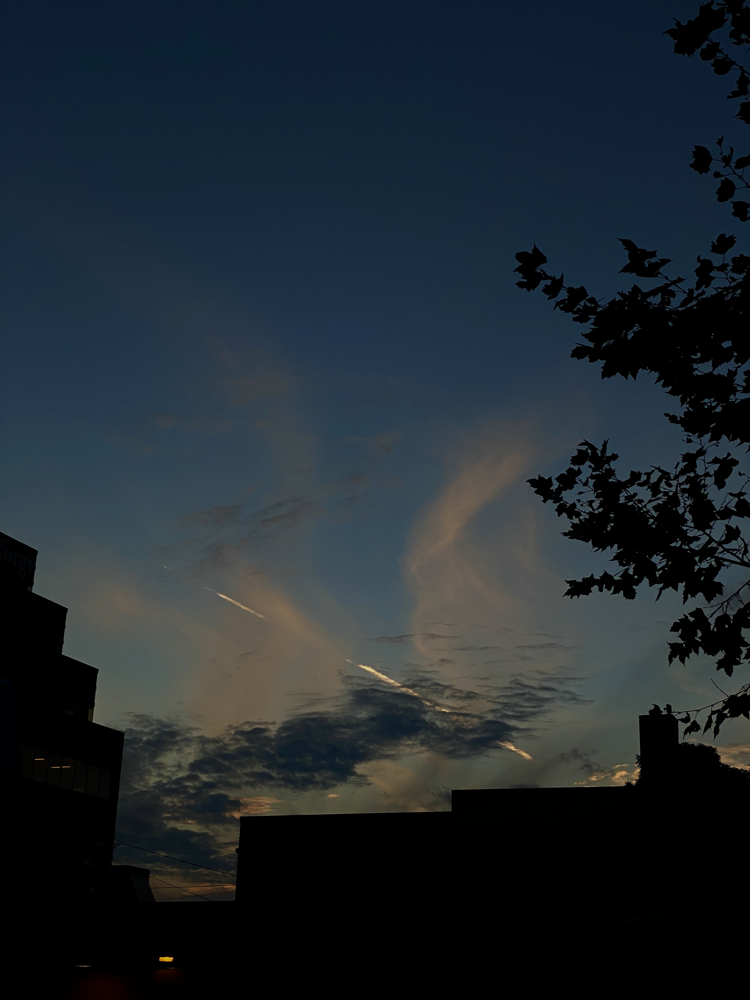
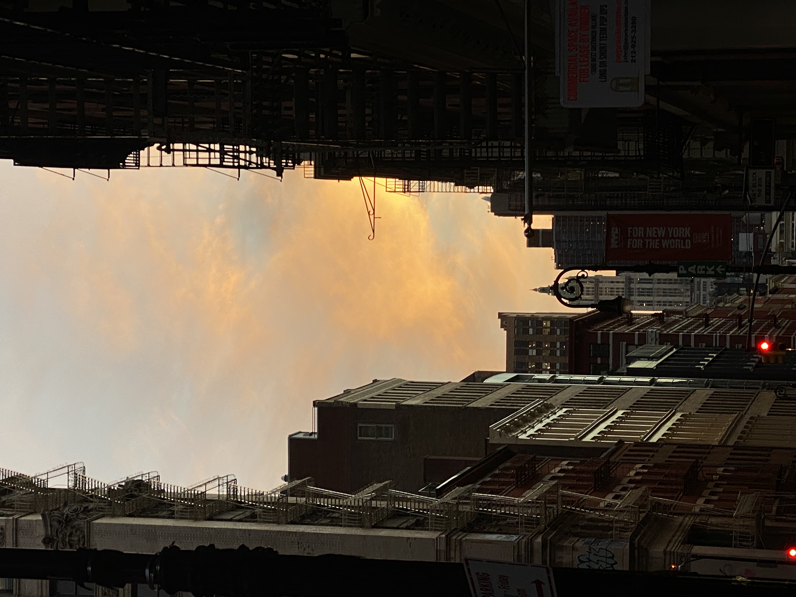
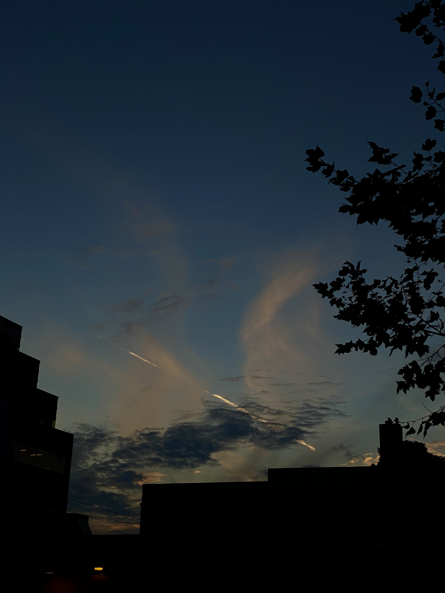
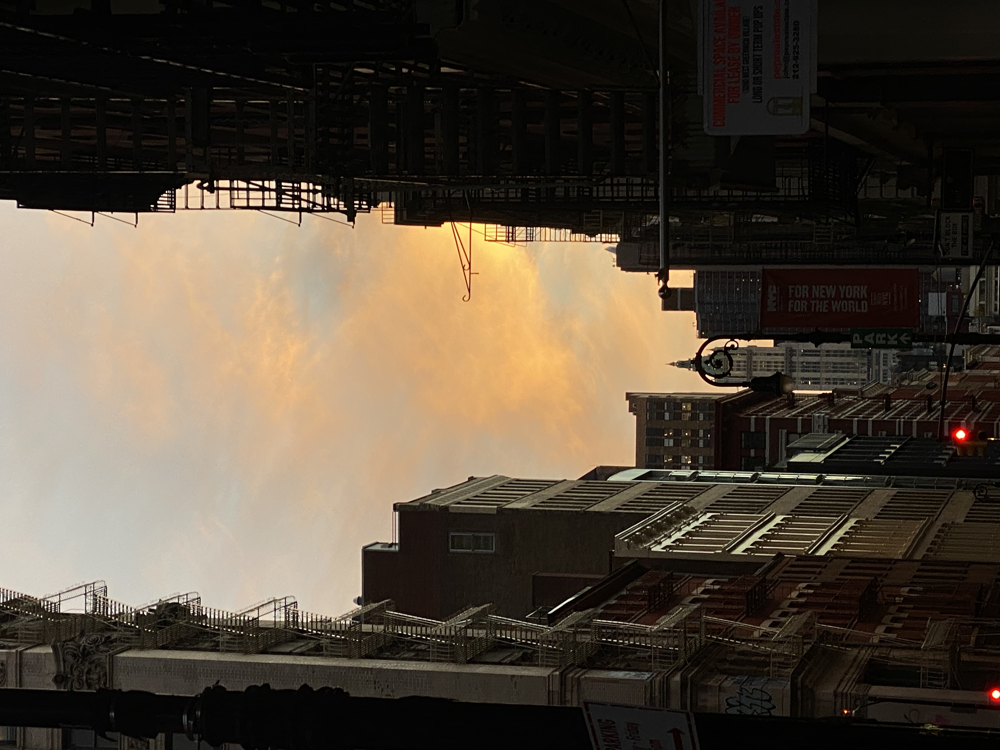
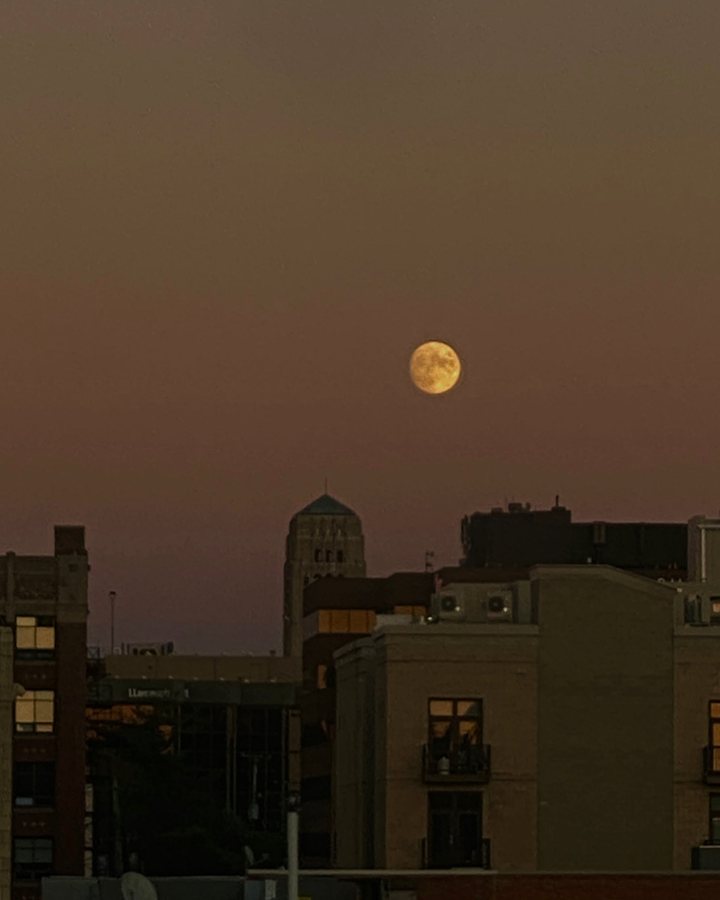
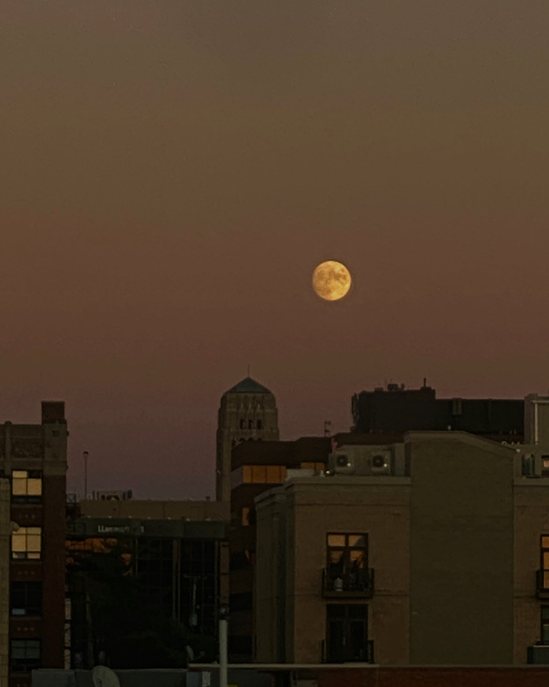

These are photographs of sky that I took in different cities I visited. I love taking photos of sky during different times of the day as well as during different weathers.
Each photo of sky is extemely unique, almost like a painting, you can see a wide range of colors depending on many factors, this excites me and also encurages me to take a closer look into the sky while I walk or simply look through my window.

 



 
